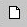
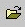
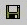
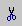
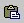

A Microsoft Photo Editor grafikai segédprogram
leírása
A Microsoft Photo Editor grafikai segédprogram
leírása
A honlapunk elkészítése során számos alkalommal elõfordulhat, hogy a különbözõ helyekrõl beszerzett képeinket valamilyen célból manipulálni szeretnénk. Ehhez elengedhetetlen, hogy megismerkedjünk pár grafikai segédprogrammal is.
A Microsoft Photo Editor program elindítása után üres képernyõ és egy eszköztár (toolbar) fogad minket.

Az eszköztáron kezdetben az ikonok többsége inaktív. Ahhoz, hogy a többi ikon nyújtotta lehetõségeket is használni tudjuk, új grafikát kell elkezdenünk, vagy be kell töltenünk egy már létezõ képet.
|  | Új grafika készítése | File/New |
Új grafika készítésénél a következõ adatokat kell megadnunk:
| Image type (képtípus): | A program 4 képtípust különböztet meg: Monochrome (Egyszínû) kép esetében a képet alkotó pontok csak fekete ill. fehér színûek lehetnek. (gyakorlatilag csak a vonalas rajzok esetében használható formátum) A Grayscale (Szürkeárnyalatos) kép. Az egyes képpontokat megjelenítéséhez 256 szürkeárnyalat áll rendelkezésre. (Pontosabban: 254 szürke árnyalat + fekete + fehér ) A Palette or 256-color (256 színû színes) kép esetén a képen belül maximum 256 különbözõ szín áll rendelkezésre. Ezek a színek alkotják a palettát, amely más-más képek esetén eltérõ lehet. True color (valódi színeket megjelenítõ) képek esetén 16,7 millió szín áll rendelkezésre. (Természetesen a képminõség, illetve a kép méretének szempontjából sem mindegy, hogy milyen formátumban hozzuk létre a képünket. Arra is van lehetõségünk, hogy a képet késõbb átalakítsuk egy másik képformátumba) |
| Resolution (felbontás): | Az hogy milyen felbontást adunk meg, nagyban befolyásolja a képminõséget (Minnél nagyobb a kép felbontása, annál részletgazdagabb). Mértékegysége: dpi (dot per inch) |
| Width (szélesség): | A kép egységekben mért szélességét adhatjuk meg |
| Height (magasság): | A kép egységekben mért magasságát adhatjuk meg |
| Unit (egység): | Itt választhatjuk ki, hogy mi legyen az egység. (centiméter, inch(hüvelyk), pixel (képpont) ) |
| Color... (Szín) | A kép háttérszínét választhatjuk ki |
Gyakorlati szempontból az gyakrabban fordul elõ, hogy egy létezõ képet olvasunk be.
|  | kép beolvasása | File/Open |
A kép beolvasásánál arra kell vigyázni, hogy az megnyitás ablakban csak azt a formátumú képet látjuk, mint amit a legördülõ listából kiválasztottunk. Ha az All Graphic Files opciót választottuk ki, akkor az ismert képformátumú fileok közül az összeset megmutatja.
A többi ikon funkciója:
|  | az aktuális kép elmentése | File/Save |
| az aktuális kép nyomtatása | File/Print | |
| kép digitalizálás Scannerrel | File/Scan Image | |
| A kép egy adott részének kijelölése | ||
|  | a kijelölt rész
kivágása (vágás után a kijelölt objektumok az eredeti helyükrõl eltûnnek és a vágólapra kerülnek) |
Edit/Cut |
| a kijelölt rész vágólapra másolása | Edit/Copy | |
|  | beillesztés a vágólapról | Edit/Paste |
| az utolsó mûvelet visszavonása | Edit/Undo | |
| az eddig visszavont mûveletek visszaállítására szolgál | Edit/Redo |
A  ikon megnyomása után kijelölõ módba
kerül a program, mindaddig, míg mégegyszer le nem nyomjuk a
gombot. Ez azt jelenti, hogy a képen az egér bal gombjának
nyomvatartása mellett kijelölhetünk egy téglalap alakú
területet. A kijelölt részt kivághatjuk, másolhatjuk,
beilleszthetjük a fent ismertetett ikonok segítségével, vagy
egyszerûen a bal gomb nyomvatartása mellett az adott területet
odébb vonszolhatjuk a képen.
ikon megnyomása után kijelölõ módba
kerül a program, mindaddig, míg mégegyszer le nem nyomjuk a
gombot. Ez azt jelenti, hogy a képen az egér bal gombjának
nyomvatartása mellett kijelölhetünk egy téglalap alakú
területet. A kijelölt részt kivághatjuk, másolhatjuk,
beilleszthetjük a fent ismertetett ikonok segítségével, vagy
egyszerûen a bal gomb nyomvatartása mellett az adott területet
odébb vonszolhatjuk a képen.
Ahhoz, hogy a kijelölést minnél pontosabban el tudjuk végezni szükség lehet arra, hogy a képet nagyítva lássuk, illetve ha már nem fér ki a képernyõre, akkor lekicsinyítsük. Ebben a következõ ikonok lesznek a segítségünkre:
| a kép nagyítása/kicsinyítése (A kurzor ilyenkor egy nagyító alakot vesz fel. Ha ekkor a képen az egér bal gombjával kattintunk, akkor a képre ráközelíthetünk. Ha eközben a SHIFT billenyût is nyomvatartjuk, akkor kicsinyítjük a képet) |
|
| A legördülõ listából kiválaszthatjuk, hogy a képet hány százalékos nagyításban szeretnénk látni. |
Figyelem! A képre való ráközelítés/eltávolodás a kép méreteit nem befolyásolja, a kép nagyítása, illetve kicsinyítése nem ezzel az ikonnal történik.